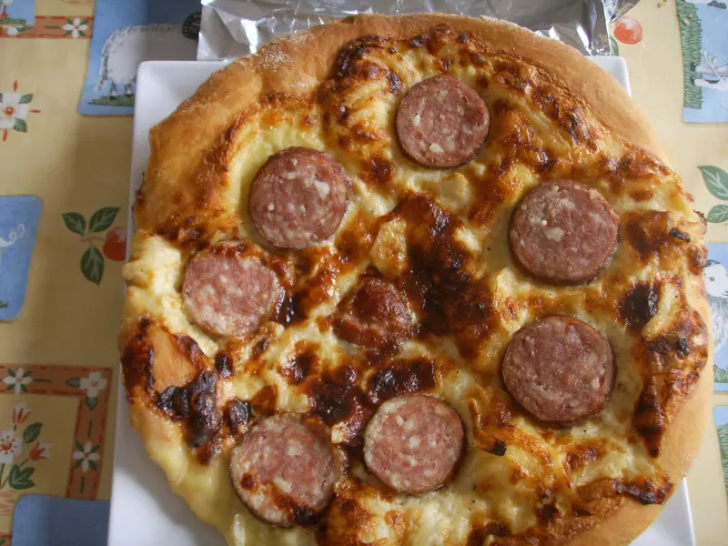

Gâteau ménage Comtois

Spécialité traditionnelle de la Franche-Comté, le gâteau ménage comtois est un dessert simple et généreux, emblématique de la cuisine familiale d’autrefois. Souvent préparé à l’occasion de fêtes ou de repas conviviaux, il incarne à lui seul l’esprit chaleureux du terroir comtois. Composé d’une pâte briochée moelleuse et légèrement sucrée, ce gâteau se distingue par sa garniture crémeuse à base de crème fraîche et de sucre. Cette association offre une texture fondante et gourmande, à la fois légère et réconfortante. Sa préparation reste accessible et ne nécessite que des ingrédients simples, ce qui en faisait autrefois un dessert du quotidien dans les foyers ruraux. Malgré sa simplicité, le gâteau ménage séduit par son équilibre parfait entre douceur et authenticité. Cuit lentement pour obtenir une pâte bien dorée et une garniture onctueuse, il se déguste aussi bien tiède que froid. Chaque bouchée rappelle une cuisine sincère, sans artifice, où l’essentiel réside dans la qualité des produits et le partage. Aujourd’hui encore, il reste un incontournable des tables comtoises, apprécié pour sa gourmandise et son côté régressif. Il s’accompagne parfaitement d’un café ou d’un verre de lait, pour un moment simple et convivial.